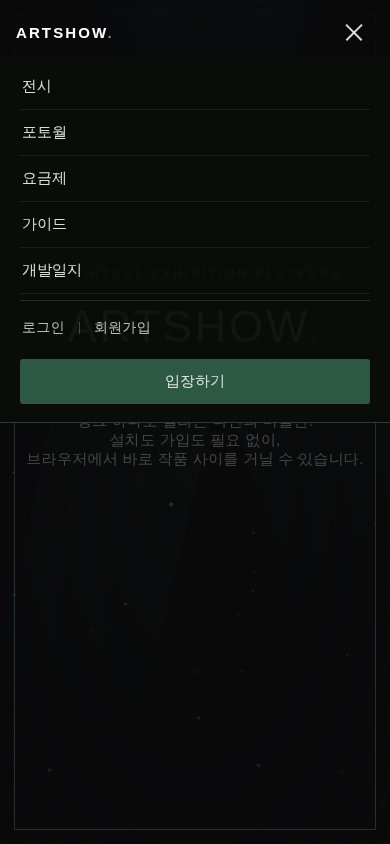

2026-07-12 🎨 모바일 네비 — 햄버거 메뉴로 교체 OpenArtShow 개발일지 — 원인 · 분석 · 개선 · 결과 원인 감독 지시: 모바일은 심플한 햄버거 메뉴로. 개선 기존 가로 스크롤 링크 필로우 → 햄버거 버튼(가로선 3개, 열리면 X로 변형) + 드롭 시트: 전시/포토월/요금제/가이드 + 로그인·회원가입 + 포레스트 입장하기 버튼. 링크 탭·항목 선택 시 자동 닫힘.데스크톱 네비는 불변 (720px 경계). 모바일 햄버거 시트 — 메뉴·로그인·입장하기